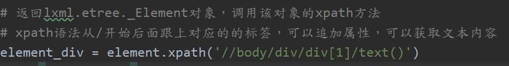

网页解析概述
request请求----返回响应----html代码----网页解析器---抽取目标数据
网页解析器：
- 正则表达式
- Lxml库
- Beautiful Soup
XPath语法基础
Lxml库的安装
Lxml不是python标准库，需要安装
查看是否已经安装:
pip show lxml

如未安装，进行安装。
在线安装
xxxxxxxxxxpip install lxml
离线安装
下载whl程序包
命令执行安装
xxxxxxxxxxpip install **********.whl
XPath语法基础
XPath是什么
XPath 是一门在 XML 文档中查找信息的语言。XPath 可用来在 XML 文档中对元素和属性进行遍历。
XPath用在哪
从目标xml内容中抽取自己想要的部分内容，主要获取的对象：
元素节点
属性节点
文本节点
XPath语法
xpath是一个字符串，从根(/)开始，后面紧跟你需要查找的路径
举例：//body/div/div[1]/text()
从/开始找body下的div下的第一个div的文本内容，下标从 0 开始 
XPath查找元素
html代码

xxxxxxxxxx<body><div id="main"><div class="header">header内容</div><div>不要叫我<span class="madam">宅女</span>，请叫我<span class="madam">居里夫人</span></div><div>最近总是失眠，16小时就醒一次</div><div>人人都说我<span class="look">丑</span>，其实我只是<span class="look">美</span>得不明显</div><div>上帝欲使其灭亡,必先使其疯狂</div><div>说假话总会<span class="result">被人揭穿</span>,戴假发总会<span class="result">被风揭穿</span></div><div>脑袋空不要紧,关键是不要进水</div></div></body>
通过属性查找元素
需求：上面html代码找到属性class为header的元素内容
xpath：//div/div[@class=“header”]/text()
提取属性值
- 提取标签内文本内容：在xpath中取得元素基础上最后用 text()
- 提取元素属性对应值：在xpath中取得元素基础上最后用@属性名
需求：取得上面代码中所有span标签的额class属性值
xpath：/div/span/@class
高级用法
更多xpath语法可以参考网络资源W3School
案例：
| 表达式 | 描述 |
|---|---|
| nodename | 选取此节点的所有子节点。 |
| / | 从根节点选取。 |
| // | 从匹配选择的当前节点选择文档中的节点，而不考虑它们的位置。 |
| . | 选取当前节点。 |
| .. | 选取当前节点的父节点。 |
| @ | 选取属性。 |
| bookstore | 选取 bookstore 元素的所有子节点。 |
|---|---|
| /bookstore | 选取根元素 bookstore。注释：假如路径起始于正斜杠( / )，则此路径始终代表到某元素的绝对路径！ |
| bookstore/book | 选取属于 bookstore 的子元素的所有 book 元素。 |
| //book | 选取所有 book 子元素，而不管它们在文档中的位置。 |
| bookstore//book | 选择属于 bookstore 元素的后代的所有 book 元素，而不管它们位于 bookstore 之下的什么位置。 |
| //@lang | 选取名为 lang 的所有属性。 |
| 路径表达式 | 结果 |
|---|---|
| /bookstore/book[1] | 选取属于 bookstore 子元素的第一个 book 元素。 |
| /bookstore/book[last()] | 选取属于 bookstore 子元素的最后一个 book 元素。 |
| /bookstore/book[last()-1] | 选取属于 bookstore 子元素的倒数第二个 book 元素。 |
| /bookstore/book[position()<3] | 选取最前面的两个属于 bookstore 元素的子元素的 book 元素。 |
| //title[@lang] | 选取所有拥有名为 lang 的属性的 title 元素。 |
| //title[@lang='eng'] | 选取所有 title 元素，且这些元素拥有值为 eng 的 lang 属性。 |
| /bookstore/book[price>35.00] | 选取 bookstore 元素的所有 book 元素，且其中的 price 元素的值须大于 35.00。 |
| /bookstore/book[price>35.00]/title | 选取 bookstore 元素中的 book 元素的所有 title 元素，且其中的 price 元素的值须大于 35.00。 |
| 通配符 | 描述 |
|---|---|
| * | 匹配任何元素节点。 |
| @* | 匹配任何属性节点。 |
| node() | 匹配任何类型的节点。 |
| 路径表达式 | 结果 |
|---|---|
| /bookstore/* | 选取 bookstore 元素的所有子元素。 |
| //* | 选取文档中的所有元素。 |
| //title[@*] | 选取所有带有属性的 title 元素。 |
| 路径表达式 | 结果 |
|---|---|
| //book/title | //book/price | 选取 book 元素的所有 title 和 price 元素。 |
| //title | //price | 选取文档中的所有 title 和 price 元素。 |
| /bookstore/book/title | //price | 选取属于 bookstore 元素的 book 元素的所有 title 元素，以及文档中所有的 price 元素。 |
如果元素标签有多级嵌套，想要取元素里面的内容：
需求：取id为main的div的内容
xpath: string(/div/元素...)
更多xpath语法请参考文档资料
Beautiful Soup库和正则表达式
操作的html字符串
xxxxxxxxxxhtml = """<body><div id="main">id为main的内容<div class="header">header内容</div><div>不要叫我宅女，请叫我居里夫人</div><div>最近总是失眠，16小时就醒一次</div><div>人人都说我丑，其实我只是美得不明显</div><div>上帝欲使其灭亡,必先使其疯狂</div><div>说假话总会被人揭穿,戴假发总会被风揭穿</div><div>脑袋空不要紧,关键是不要进水</div><ul><li><a href="demo.xml">跳转</a></li><li><a href="demo3.xml">跳转3</a></li></ul></div></body>"""
BeautifulSoup基本用法
创建BeautifulSoup对象
BeautifulSoup(html, 'lxml')
xxxxxxxxxxfrom bs4 import BeautifulSoup# bs4解析器调用BeautifulSoup的构造方法将字符串转换成BeautifulSoup文档对象soup = BeautifulSoup(html, 'lxml')
获取文档对象元素
标签对象 = BeautifulSoup对象.标签名
xxxxxxxxxx# 可以通过soup对象直接访问html的文档节点对象 文档对象.元素名first_div = soup.div # 返回文档对象的第一个div对象 注意返回的是带有标签结构的内容a_tag = soup.ul.li.a # 返回第一个ul对象的第一个li标签对象下的第一个a标签对象
获取元素内容
标签对象.string
标签对象.get_text()
xxxxxxxxxxtag_content = a_tag.string # 返回标签对象中文本内容 跳转tag_content2 = a_tag.get_text() # 返回标签对象中文本内容第二种方式 跳转
获取元素属性
标签对象['属性名']
标签对象.get('属性名')
xxxxxxxxxxtag_attr = a_tag['href'] # 返回标签对象的属性 demo.xmltag_attr2 = a_tag.get('href') # 返回标签对象的属性第二种方式 demo.xml
BeautifulSoup标准选择器find_all方法
html结构数据：
xxxxxxxxxx<body><div id="main">id为main的内容<div class="header">header内容</div><div>不要叫我宅女，请叫我居里夫人</div><div>最近总是失眠，16小时就醒一次</div><div>人人都说我丑，其实我只是美得不明显</div><div>上帝欲使其灭亡,必先使其疯狂</div><div>说假话总会被人揭穿,戴假发总会被风揭穿</div><div>脑袋空不要紧,关键是不要进水</div><ul><li><a href="demo.xml">跳转</a></li><li><a href="demo3.xml">跳转3</a></li></ul></div></body>
查找所有指定节点
BeautifulSoup对象.find_all('标签名')
xxxxxxxxxxfrom bs4 import BeautifulSoup# bs4解析器调用BeautifulSoup的构造方法将字符串转换成BeautifulSoup文档对象soup = BeautifulSoup(html, 'lxml')# 根据标签名查找所有对应的元素all_div = soup.find_all('div')
根据下标查找某节点
在上面基础上可以结合下标 [index] 查找指定某个元素，index从0开始
xxxxxxxxxx# 根据下标查找指定某个元素div_1 = soup.find_all('div')[1]
获取节点文本
同上基本用法
xxxxxxxxxx# 获取元素文本内容print(div_1.string)print(div_1.get_text())
根据属性查找节点
根据属性查找节点
- 通过attrs可以传入多属性字典对象过滤元素
- 直接通过class样式查找元素
- 直接通过id查找指定元素
xxxxxxxxxx# 根据属性查找元素节点div_by_attr = soup.find_all(attrs={'class': 'header'})[0]div_by_class = soup.find_all(class_='header') # 注意class有一个下划线div_by_id = soup.find_all(id='main')
正则表达式
什么是正则表达式
规则性字符串
规则性：语法
正则表达式的作用
从繁杂的大量字符串中快速、高效匹配目标字符串
re模块的常用函数
ximport re# match函数从字符串起始位置开始匹配 匹配不成功返回None,匹配成功返回re.Match对象result = re.match(r'he', 'hello python')# search函数返回字符串中第一个与正则表达式匹配的re.Match对象 re.I忽略大小写result = re.search(r'python', 'hello:Python,python is a program language', re.I)# split将制定字符串按照正则表达式进行分割result = re.split(r"-", "hello-python-lol-java")# findall以列表形式返回全部与正则表达式匹配的字符串result = re.findall(r"\d+", "hello lucy,age=20,salary=20000")# sub将与正则表达式匹配的字符串用制定字符串替换掉，返回替换后的字符串result = re.sub(r"lol", "python", "i like lol, lol is so interesting...")# compile将正则表达式字符串转换成正则表达式对象Pattern 执行效率更高pattern = re.compile(r'\d+')result = re.findall(pattern, '147a258b369c')print(result)
实训主题
实训内容
给定html片段
xxxxxxxxxx<body><div id="main">id为main的内容<div class="header">header内容</div><div>不要叫我<span class="madam">宅女</span>，请叫我<span class="madam">居里夫人</span></div><div>最近总是失眠，16小时就醒一次</div><div>人人都说我<span class="look">丑</span>，其实我只是<span class="look">美</span>得不明显</div><div>上帝欲使其灭亡,必先使其疯狂</div><div>说假话总会<span class="result">被人揭穿</span>,戴假发总会<span class="result">被风揭穿</span></div><div>脑袋空不要紧,关键是不要进水</div></div></body>
获取指定元素
需求：
- 获取所有div元素
- 获取id为main的div元素
- 获取id为main的第二个子div元素的内容
获取指定属性
需求：获取所有span元素的class属性值
获取内容
需求：
- 获取所有div元素内容
- 获取所有span元素内容
获取百度数据
获取百度首页头部所有链接文字
获取百度首页头部所有链接

作业
完成课堂练习和实训主题内容
使用XPath和lxml完成百度学校官方首页菜单数据